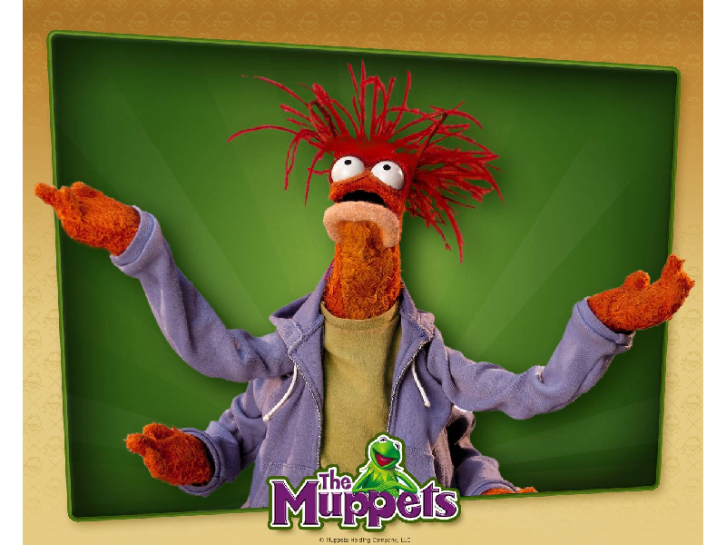
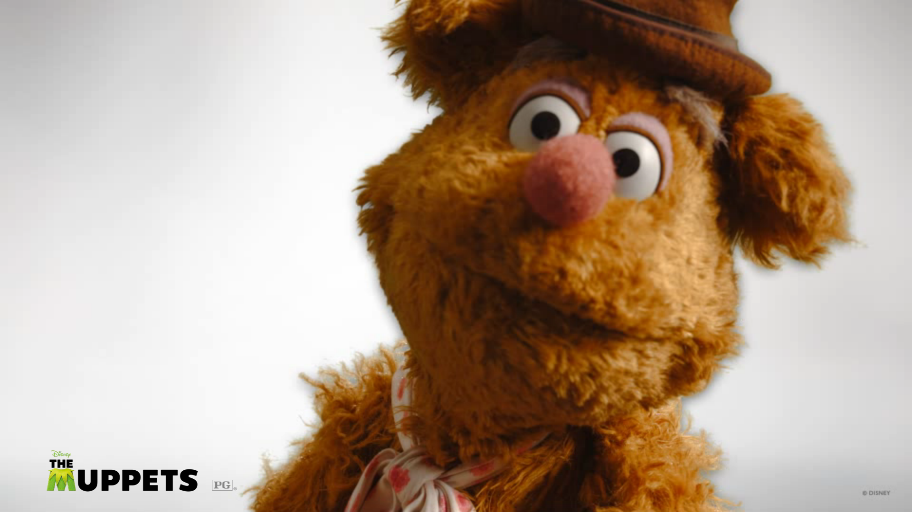
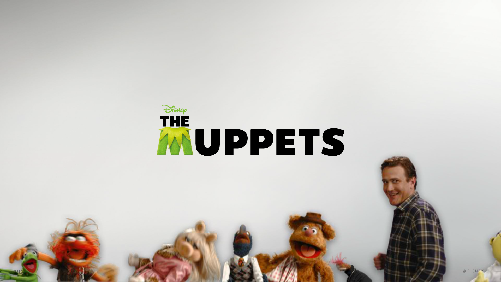

Muppet Screensavers

muppets.com

DOWNLOAD
 .exe file zipped (Windows) (3.86 MB)
.exe file zipped (Windows) (3.86 MB)
.sit file (Mac OS X) (3.64 MB)
The Muppets (2011): Closeups

DOWNLOAD
.exe file zipped (32.2 MB)
The Muppets (2011): Conga Line

DOWNLOAD
.exe file zipped (28.1 MB)